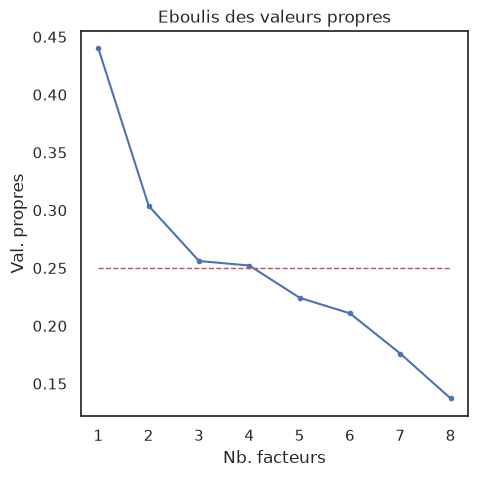
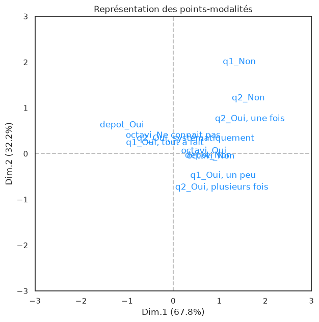
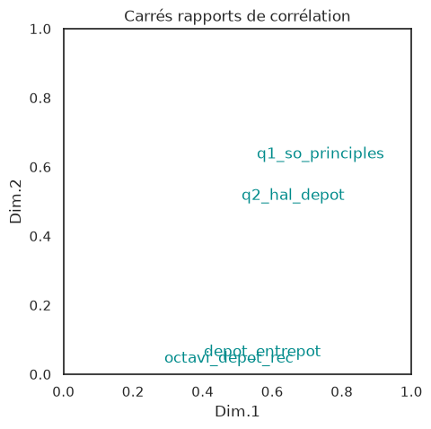

import pandas as pd
import re
import os #pour naviguer dans les dossiers
from io import StringIO
import s3fs #pour connecter au bucket
import numpy as np
import seaborn as sns
import matplotlib.pyplot as plt
import umap
from sklearn.datasets import load_digits
import hdbscan
import sklearn.cluster as cluster
from sklearn.metrics import adjusted_rand_score, adjusted_mutual_info_score
# Create filesystem object
S3_ENDPOINT_URL = "https://" + os.environ["AWS_S3_ENDPOINT"]
fs = s3fs.S3FileSystem(client_kwargs={'endpoint_url': S3_ENDPOINT_URL})
BUCKET_OUT = "aluneau"
last_file="anonymous_answer_2026-07-24.csv"
with fs.open(f"{BUCKET_OUT}/data_eP8/raw/{last_file}", "r") as file_in:
df0 = pd.read_csv(file_in, sep =",")
#list_affil = pd.read_csv("../list_affiliation.csv", sep =",")
df0 = df0.loc[~df0.q45_clé.isin(["9EAP-NB4B","QNYZ-3MH2"])].drop_duplicates(subset="q45_clé")#.merge(list_affil, on = ["q45_clé", "q44_ufr_labo"], how = "left")
df_col = pd.read_csv("../le_questionnaire/dico_variable.csv", sep = ",")
Profil disciplinaire#
def split_multiple_choices(data, column, index, sep = '|'):
"""
split and explode column with multiple value
data = a panda dataframe
column = name of column which we want to split.
index = column corresponding to id of rows
sep = by default '|'. Character use to separate values.
"""
df_split = data.copy()
df_split[column]= df0.apply(lambda row: row[column].replace(";","|") ,1 )
df_split[column] = df_split[column].str.split(sep)
df_explode = df_split.explode(column)
gb_data = df_explode.groupby([column]).agg(nb = (index, "size")).reset_index()
gb_data["total"] = data[index].nunique()
gb_data["freq"] = gb_data.nb/gb_data.total*100
gb_data["total_freq"] = gb_data.total/gb_data.total*100
return gb_data, df_explode
for x in df0.columns:
print(x)
qno_obs
q1_so_principles
q2_hal_depot
q3_octavi_depot
q4_diff_data
q4_autres_entrepots
q5_r
q5_python
q5_excel
q5_julia
q5_stata
q5_sas
q5_aucun
q5_autre
q5_1_other_lang
q6_dev_code
q6_1_dev_exemple
q7_software_depot
q7_1_other_sw_depot
q8_depot_hal_help
q8_rediger_pdg_help
q8_respect_rgpd_help
q8_licences_help
q8_depot_donnees_help
q8_metadonnees_help
q8_data_paper_help
q8_fair_data_help
q9_utilite_accomp
q10_type_data
q10_other_type_data
q11_quali_or_quanti
q12_humanum
q12_1_how_humanum
q13_nakala
q13_isidore
q13_sharedocs
q13_hébergement_web
q14_stylo
q14_mattermost
q14_gitlab
q14_matomo
q14_hnurl
q14_kanboard
q15_nakala_help
q15_isidore_help
q15_sharedocs_help
q15_hébergement_web_help
q15_stylo_help
q15_mattermost_help
q15_gitlab_help
q15_matomo_help
q15_hnurl_help
q15_kanboard_help
53. Tableur
54. Logiciels d'analyse statistique (ex. R – Rstudio)
55. Python (web-scraping, traitement automatique des langues…)
56. Logiciels d'exploration de textes, analyse, statistique... (ex. Gargantext, Iramuteq, Hyperbase)
57. Logiciels d'OCR : reconnaissance Optique de Caractères
58. Logiciels d'analyse de réseaux (ex. Gephi)
59. Logiciels d'édition numérique en ligne (ex. Odette, Atom)
60. Logiciel de traitement des données qualitatives, CAQDAS (ex. Taguette)
61. Logiciels de cartographie thématique (ex. Magrit)
62. Logiciels de SIG (ex. QGis)
63. Système de gestion de base de données
64. Autre
65. other_accomp_software
q17_util_accomp_software
q18_stat_desc_help
q18_regressions_help
q18_temporal_analysis_help
q18_cartographie_help
q18_analyse_text_help
q18_net_analysis_help
q18_webscrapping
q18_deeplearning_help
q18_edit_num_help
q18_questionnaire_help
q18_bibliométrie_help
q18_1_utilite_accomp_methode
q19_tableur_help
q19_logiciels_d'analyse_statistique_help
q19_python_help
q19_garg_iram_hyperbase_help
q19_ocr_help
q19_network_analysis_help
q19_odette_atom_help
q19_caqdas_help
q19_carto_help
q19_sig_help
q19_sgbd_help
q19_autre_help
q19_1_other_software_help
q20_excel_help
q20_sas_help
q20_spss_help
q20_stata_help
q20_nvivo_help
q20_atlasti_help
q20_oxygen_help
q20_arcgis_help
q20_autre_help
q20_1_other_closed_software_help
q21_util_accomp_closed_software
q22_postes_info
q22_ressources_doc
q22_working_spaces
q22_permanences
q22_sdbox_casd
q23_other_service_univ
q24_research_fields
q25_statut
q25_1_statut_autre
q26_env_travail
q26_1_autre_env
q27_pc_fixe_bureau_freq
q27_pc_fixe_home_freq
q27_laptop_perso_freq
q27_laptop_pro_freq
q27_phone_perso_freq
q27_phone_pro_freq
q27_tablette_perso_freq
q27_tablette_pro_freq
q27_stylos et papiers_freq
q28_archive_data
q28_1_autre_archive_data
q29_os_sys
q30_webbrowser
q30_1_autre_webbrowser
q31_stockage_doc
q31_1_autre_stockage
q32_collab_tools
q32_1_autre_collab_tools
q33_sauvegarde_data
q33_1_autre_suavegarde
q34_ia_for_research
q35_ia_tools
q36_gratuit_ou_payant
q37_raison_util_ia
q38_ok_contact
q39_etre_informer
q40_present_work
q41_ok_teaching
q44_ufr_labo
q45_clé
q46_date_de_saisie
q47_date_de_dernière_modification
q48_date_de_dernier_enregistrement
q49_temps_de_saisie
q50_langue
q51_progression
q52_dernière_question_saisie
q53_origine
q54_appareil_utilisé_pour_la_saisie
q25_statut_rec
q25_doctorant
q3_octavi_rec
q5_1_other_lang_rec
q5_logiciel_traitement_rec
q5_family_logi
q6_1_dev_what
q6_1_dev_group
q6_1_dev_how
q26_1_autre_rec
q35_ia_tools_rec
no_cluster_x
nom_cluster_x
no_cluster_y
nom_cluster_y
df0.loc[df0.q3_octavi_depot=="Non","octavi_depot_rec"]= "Non"
df0.loc[df0.q3_octavi_depot.str.contains("ne connais pas"),"octavi_depot_rec"]= "Ne connait pas"
df0.loc[(df0.q3_octavi_depot!="Non") & (~df0.q3_octavi_depot.str.contains("ne connais pas")),"octavi_depot_rec"]= "Oui"
tool_diff_data = {
'OSF':'OSF',
'github':'dépot git',
'osf':'OSF',
'Sur OSF':'OSF',
'oui, sur des sites personnels':"site personnel",
"Oui, au cdsp dans le cadre d'un projet ANR":"CDSP",
'dépot GIT':'dépot git',
'sur mes sites personnels':"site personnel",
'ORTOLANG, COCOON, dev perso':"Ortolang|Coccon|site personnel",
'Serveur géré par une fondation de recherche':"Fondation de recherche",
'Sur mon site internet':"site personnel",
'cela ne me concerne pas':"pas concerné",
'Sur ma page web':"site personnel",
'directement sur le site de soumission des articles':"Editeur",
'Ortolang':"Ortolang",
'page ou transmission personnelle':"site personnel|pair à pair",
"Sur Nakala mais par l'intermédiaire d'un collègue":"Nakala",
'Mendeley data':"Mendeley data"
}
type_entrepot = {
'OSF':'Autre entrepot',
'github':'page personnelle',
'osf':'Autre entrepot',
'Sur OSF':'Autre entrepot',
'oui, sur des sites personnels':"page personnelle",
"Oui, au cdsp dans le cadre d'un projet ANR":"Entrepot institutionnel",
'dépot GIT':'page personnelle',
'sur mes sites personnels':"page personnelle",
'ORTOLANG, COCOON, dev perso':"Entrepot institutionnel|page personnelle",
'Serveur géré par une fondation de recherche':"Autre entrepot",
'Sur mon site internet':"page personnelle",
'cela ne me concerne pas':"pas concerné",
'Sur ma page web':"page personnelle",
'directement sur le site de soumission des articles':"Editeur",
'Ortolang':"Entrepot institutionnel",
'page ou transmission personnelle':"page personnelle|pair à pair",
"Sur Nakala mais par l'intermédiaire d'un collègue":"Entrepot institutionnel",
'Mendeley data':"Autre entrepot"
}
df0["q4_autres_entrepots_rec"] = df0.q4_autres_entrepots.map(tool_diff_data)
df0["type_entrepot"] = df0.q4_autres_entrepots.map(type_entrepot.get)
df0.q4_diff_data.unique()
type_entrepot2 = {'Non':'Non',
'Autre, précisez':'Autre, précisez',
'Oui, sur Zenodo, Nakala':'Autre entrepot',
'Oui, sur Data Paris 8':'Entrepot institutionnel',
'Oui, sur Nakala':'Entrepot institutionnel',
'Non;Oui, sur Nakala':'Entrepot institutionnel'}
df0["type_entrepot1"] = df0.q4_diff_data.map(type_entrepot2.get)
list_key=[]
for key in df0.q45_clé:
diff_data = df0.type_entrepot1.loc[df0.q45_clé==key].iloc[0]
autre = df0.type_entrepot.loc[df0.q45_clé==key].iloc[0]
#print(type(autre))
if 'entrepot' in diff_data:
depot_entrepot = "Oui"
else:
if type(autre)== str:
if 'entrepot' in autre:
depot_entrepot = "Oui"
else:
depot_entrepot = "Non"
else:
depot_entrepot = "Non"
dict_key={"q45_clé":key,
"depot_entrepot":depot_entrepot}
list_key.append(dict_key)
df_key = pd.DataFrame.from_dict(list_key)
df0 = df0.merge(df_key, on =["q45_clé"], how ="left")
df0.groupby("depot_entrepot").agg(nb = ("q45_clé","size"))
df1 = df0.loc[df0.q4_diff_data!="Non"]
tab_croise = pd.crosstab(df1.depot_entrepot, df1.q25_statut_rec, margins=True).sort_values("depot_entrepot")
print(tab_croise.to_markdown())
| depot_entrepot | Chercheur | Doctorant | Personnel d'appui à la recherche | All |
|:-----------------|------------:|------------:|-----------------------------------:|------:|
| All | 31 | 1 | 3 | 35 |
| Non | 16 | 0 | 3 | 19 |
| Oui | 15 | 1 | 0 | 16 |
df0.loc[df0.q4_diff_data !="Non", "q4_diff_data_grouped"] = "Oui"
df0.loc[df0.q4_diff_data =="Non", "q4_diff_data_grouped"] = "Non"
tab_croise = pd.crosstab(df0.q4_diff_data_grouped, df0.q25_statut_rec, margins=True)
print(tab_croise.to_markdown())
| q4_diff_data_grouped | Chercheur | Doctorant | Personnel d'appui à la recherche | All |
|:-----------------------|------------:|------------:|-----------------------------------:|------:|
| Non | 73 | 11 | 0 | 84 |
| Oui | 31 | 1 | 3 | 35 |
| All | 104 | 12 | 3 | 119 |
var_os = ["q45_clé","q1_so_principles","q2_hal_depot","octavi_depot_rec","depot_entrepot"]
df_os = df0[var_os].set_index("q45_clé")
for col in df_os.columns:
df_os[col] = df_os.apply(lambda row: f'{col.split("_")[0]}_{str(row[col])}', 1) # lower sentence
df_os
| q1_so_principles | q2_hal_depot | octavi_depot_rec | depot_entrepot | |
|---|---|---|---|---|
| q45_clé | ||||
| GNEG-5QXQ | q1_Oui, un peu | q2_Oui, une fois | octavi_Non | depot_Non |
| FCCB-GMYA | q1_Oui, tout à fait | q2_Oui, plusieurs fois | octavi_Ne connait pas | depot_Non |
| CV3G-95CT | q1_Oui, un peu | q2_Oui, une fois | octavi_Non | depot_Oui |
| M5L8-UM9F | q1_Oui, un peu | q2_Oui, systématiquement | octavi_Ne connait pas | depot_Non |
| HT8V-PSKZ | q1_Oui, un peu | q2_Oui, plusieurs fois | octavi_Non | depot_Non |
| ... | ... | ... | ... | ... |
| MLSN-NBUS | q1_Oui, un peu | q2_Oui, plusieurs fois | octavi_Non | depot_Oui |
| WAR9-LFJP | q1_Oui, un peu | q2_Oui, systématiquement | octavi_Non | depot_Non |
| HRZG-6JGE | q1_Oui, un peu | q2_Oui, plusieurs fois | octavi_Non | depot_Non |
| 32TW-JLY5 | q1_Non | q2_Oui, plusieurs fois | octavi_Ne connait pas | depot_Oui |
| 6GVE-N5NJ | q1_Non | q2_Oui, une fois | octavi_Non | depot_Non |
117 rows × 4 columns
!pip install fanalysis
Collecting fanalysis
Downloading fanalysis-0.0.1-py3-none-any.whl.metadata (2.0 kB)
Requirement already satisfied: numpy>=1.11.0 in /opt/python/lib/python3.13/site-packages (from fanalysis) (2.5.2)
Requirement already satisfied: matplotlib>=2.0.0 in /opt/python/lib/python3.13/site-packages (from fanalysis) (3.11.1)
Requirement already satisfied: scikit-learn>=0.18.0 in /opt/python/lib/python3.13/site-packages (from fanalysis) (1.9.0)
Requirement already satisfied: pandas>=0.19.0 in /opt/python/lib/python3.13/site-packages (from fanalysis) (2.3.3)
Requirement already satisfied: contourpy>=1.0.1 in /opt/python/lib/python3.13/site-packages (from matplotlib>=2.0.0->fanalysis) (1.3.3)
Requirement already satisfied: cycler>=0.10 in /opt/python/lib/python3.13/site-packages (from matplotlib>=2.0.0->fanalysis) (0.12.1)
Requirement already satisfied: fonttools>=4.28.2 in /opt/python/lib/python3.13/site-packages (from matplotlib>=2.0.0->fanalysis) (4.63.0)
Requirement already satisfied: kiwisolver>=1.3.1 in /opt/python/lib/python3.13/site-packages (from matplotlib>=2.0.0->fanalysis) (1.5.0)
Requirement already satisfied: packaging>=20.0 in /opt/python/lib/python3.13/site-packages (from matplotlib>=2.0.0->fanalysis) (26.3)
Requirement already satisfied: pillow>=9 in /opt/python/lib/python3.13/site-packages (from matplotlib>=2.0.0->fanalysis) (12.3.0)
Requirement already satisfied: pyparsing>=3 in /opt/python/lib/python3.13/site-packages (from matplotlib>=2.0.0->fanalysis) (3.3.2)
Requirement already satisfied: python-dateutil>=2.7 in /opt/python/lib/python3.13/site-packages (from matplotlib>=2.0.0->fanalysis) (2.9.0.post0)
Requirement already satisfied: pytz>=2020.1 in /opt/python/lib/python3.13/site-packages (from pandas>=0.19.0->fanalysis) (2026.3.post1)
Requirement already satisfied: tzdata>=2022.7 in /opt/python/lib/python3.13/site-packages (from pandas>=0.19.0->fanalysis) (2026.3)
Requirement already satisfied: six>=1.5 in /opt/python/lib/python3.13/site-packages (from python-dateutil>=2.7->matplotlib>=2.0.0->fanalysis) (1.17.0)
Requirement already satisfied: scipy>=1.10.0 in /opt/python/lib/python3.13/site-packages (from scikit-learn>=0.18.0->fanalysis) (1.18.0)
Requirement already satisfied: joblib>=1.4.0 in /opt/python/lib/python3.13/site-packages (from scikit-learn>=0.18.0->fanalysis) (1.5.3)
Requirement already satisfied: narwhals>=2.0.1 in /opt/python/lib/python3.13/site-packages (from scikit-learn>=0.18.0->fanalysis) (2.24.0)
Requirement already satisfied: threadpoolctl>=3.5.0 in /opt/python/lib/python3.13/site-packages (from scikit-learn>=0.18.0->fanalysis) (3.6.0)
Downloading fanalysis-0.0.1-py3-none-any.whl (56 kB)
Installing collected packages: fanalysis
Successfully installed fanalysis-0.0.1
import numpy as np
import matplotlib.pyplot as plt
import seaborn as sns
%matplotlib inline
sns.set(context='notebook', style='white', rc={'figure.figsize':(14,10)})
#analyse avec fanalysis
from fanalysis.mca import MCA
#récupération des variables actives
DActives = df_os.copy()
#print(DActives)
#récupération des infos - nombre de variables
p = DActives.shape[1]
print(p)
#nombre d'observations
n = DActives.shape[0]
print(p, n)
#codage en 0/1
X = pd.get_dummies(DActives,prefix='',prefix_sep='', dtype=int)
M = X.shape[1]
4
4 117
acm = MCA(row_labels=DActives.index,var_labels=DActives.columns)
acm.fit(DActives.values)
#propriétés
print(dir(acm))
np.transpose(acm.eig_)
['__class__', '__delattr__', '__dict__', '__dir__', '__doc__', '__eq__', '__firstlineno__', '__format__', '__ge__', '__getattribute__', '__getstate__', '__gt__', '__hash__', '__init__', '__init_subclass__', '__le__', '__lt__', '__module__', '__ne__', '__new__', '__reduce__', '__reduce_ex__', '__repr__', '__setattr__', '__setstate__', '__sizeof__', '__sklearn_clone__', '__sklearn_tags__', '__static_attributes__', '__str__', '__subclasshook__', '__weakref__', '_binarization', '_compute_stats', '_compute_svd', '_doc_link_module', '_doc_link_template', '_doc_link_url_param_generator', '_get_class_level_metadata_request_values', '_get_doc_link', '_get_fitted_attr_html', '_get_metadata_request', '_get_param_names', '_get_params_html', '_html_repr', '_repr_html_', '_repr_html_inner', '_repr_mimebundle_', '_sklearn_auto_wrap_output_keys', '_validate_params', 'c_', 'col_contrib_', 'col_coord_', 'col_cos2_', 'col_labels', 'col_labels_', 'col_labels_short_', 'col_labels_short_temp_', 'col_labels_temp_', 'col_topandas', 'eig_', 'fit', 'fit_transform', 'get_metadata_routing', 'get_params', 'mapping', 'mapping_col', 'mapping_row', 'model_', 'n_', 'n_categories_', 'n_components', 'n_components_', 'n_vars_', 'plot_col_contrib', 'plot_col_cos2', 'plot_eigenvalues', 'plot_row_contrib', 'plot_row_cos2', 'prefixes_', 'r_', 'row_contrib_', 'row_coord_', 'row_cos2_', 'row_labels', 'row_labels_', 'row_topandas', 'set_params', 'stats', 'transform', 'var_labels']
array([[ 0.43993838, 21.99691903, 21.99691903],
[ 0.30377673, 15.18883643, 37.18575547],
[ 0.25605185, 12.80259232, 49.98834778],
[ 0.2521518 , 12.60758986, 62.59593764],
[ 0.2242374 , 11.21186991, 73.80780756],
[ 0.21076473, 10.53823651, 84.34604407],
[ 0.17594938, 8.79746882, 93.14351289],
[ 0.13712974, 6.85648711, 100. ]])
#nombre max de facteurs
Hmax = M-p
print(M, Hmax)
#valeurs propres
valeurs_propres = pd.DataFrame(np.transpose(acm.eig_),columns=['Val_P','%','Cumul %'],index=range(1,Hmax+1))
valeurs_propres
12 8
| Val_P | % | Cumul % | |
|---|---|---|---|
| 1 | 0.439938 | 21.996919 | 21.996919 |
| 2 | 0.303777 | 15.188836 | 37.185755 |
| 3 | 0.256052 | 12.802592 | 49.988348 |
| 4 | 0.252152 | 12.607590 | 62.595938 |
| 5 | 0.224237 | 11.211870 | 73.807808 |
| 6 | 0.210765 | 10.538237 | 84.346044 |
| 7 | 0.175949 | 8.797469 | 93.143513 |
| 8 | 0.137130 | 6.856487 | 100.000000 |
#librairie graphique
import matplotlib.pyplot as plt
#éboulis des v.p.
fix,ax = plt.subplots(figsize=(5,5))
ax.plot(range(1,Hmax+1),acm.eig_[0],".-")
ax.set_xlabel("Nb. facteurs")
ax.set_ylabel("Val. propres")
plt.title("Eboulis des valeurs propres")
#seuil - Règle de Kaiser
ax.plot([1,Hmax],[1/p,1/p],"r--",linewidth=1)
plt.show()

#récupérer les valeurs propres supérieur à (1/p)
lambada = acm.eig_[0][acm.eig_[0]>1/p]
print(lambada)
#appliquer la correction
lambada_prim = ((p/(p-1))*(lambada-1/p))**2
print(lambada_prim)
#faire la somme
S_prim = np.sum(lambada_prim)
print(S_prim)
[0.43993838 0.30377673 0.25605185 0.2521518 ]
[6.41361572e-02 5.14122053e-03 6.51108349e-05 8.23152209e-06]
0.06935072010508446
#et produire les pourcentages
percent_prim = lambada_prim/S_prim*100
#affichage
print(pd.DataFrame(np.transpose(np.array([lambada_prim,percent_prim,np.cumsum(percent_prim)])),columns=['Val.P','%','Cumul %'],index=range(1,5)))
Val.P % Cumul %
1 0.064136 92.480881 92.480881
2 0.005141 7.413363 99.894244
3 0.000065 0.093886 99.988131
4 0.000008 0.011869 100.000000
#somme corrigée de Greenacre (S’’)
S2nd = p/(p-1)*(np.sum(acm.eig_[0]**2)-(M-p)/(p**2))
print(S2nd)
#pourcentage corrigé Greenacre
percent_2nd = lambada_prim/S2nd
#affichage
print(pd.DataFrame(np.transpose(np.array([lambada_prim,percent_2nd,np.cumsum(percent_2nd)])),columns=['Val.P','%','Cumul %'],index=range(1,5)))
0.0792481173966298
Val.P % Cumul %
1 0.064136 0.809308 0.809308
2 0.005141 0.064875 0.874183
3 0.000065 0.000822 0.875005
4 0.000008 0.000104 0.875109
#affichage des coordonnées
print(pd.DataFrame(acm.col_coord_[:,:2],index=X.columns,columns=['Coord.F1','Coord.F2']))
Coord.F1 Coord.F2
q1_Non 1.074868 1.954655
q1_Oui, tout à fait -1.025953 0.186864
q1_Oui, un peu 0.368278 -0.530246
q2_Non 1.270100 1.164383
q2_Oui, plusieurs fois 0.041962 -0.787284
q2_Oui, systématiquement -0.791980 0.281504
q2_Oui, une fois 0.905402 0.710471
octavi_Ne connait pas -1.030077 0.345607
octavi_Non 0.294676 -0.107685
octavi_Oui 0.171195 0.007484
depot_Non 0.252689 -0.090893
depot_Oui -1.595097 0.573764
#représentation dans le plan
fix,ax = plt.subplots(figsize=(7,7))
ax.axis([-3,+3,-3,+3])
ax.plot([-3,+3],[0,0],color='silver',linestyle='--')
ax.plot([0,0],[-3,+3],color='silver',linestyle='--')
ax.set_xlabel("Dim.1 (67.8%)")
ax.set_ylabel("Dim.2 (32.2%)")
plt.title("Représentation des points-modalités")
for i in range(X.shape[1]):
ax.text(acm.col_coord_[i,0],acm.col_coord_[i,1],X.columns[i],color='dodgerblue')
plt.show()

contrib12
| index | 0 | 1 | |
|---|---|---|---|
| 0 | q1_Non | 7.855986 | 37.624267 |
| 1 | q1_Oui, tout à fait | 19.426780 | 0.933328 |
| 2 | q1_Oui, un peu | 4.281805 | 12.854885 |
| 3 | q2_Non | 10.968982 | 13.351169 |
| 4 | q2_Oui, plusieurs fois | 0.041049 | 20.926831 |
| 5 | q2_Oui, systématiquement | 12.490356 | 2.285348 |
| 6 | q2_Oui, une fois | 5.574083 | 4.970738 |
| 7 | octavi_Ne connait pas | 12.883725 | 2.100409 |
| 8 | octavi_Non | 3.416155 | 0.660686 |
| 9 | octavi_Oui | 0.156580 | 0.000433 |
| 10 | depot_Non | 3.132239 | 0.586927 |
| 11 | depot_Oui | 19.772261 | 3.704978 |
df_os.columns[:5]
Index(['q1_so_principles', 'q2_hal_depot', 'octavi_depot_rec',
'depot_entrepot'],
dtype='object')
#récupération des contribution sous une forme exploitable - 2 facteurs
contrib12 = pd.DataFrame(acm.col_contrib_[:,:2],index=X.columns)
print(contrib12)
#**calcul des carrés des rapports de corrélation par variable sur les 2 facteurs**
#structure pour les eta2
eta2 = np.zeros((4,2))
#pour chaque facteur
for h in range(2):
#pour chaque variable
for j in range(4):
eta2[j,h] = (p*acm.eig_[0][h]*np.sum(contrib12.loc[np.unique(df_os.iloc[:,j])][h]))/100
#affichage
print(pd.DataFrame(eta2,index=df_os.columns[:],columns=['F1','F2']))
0 1
q1_Non 7.855986 37.624267
q1_Oui, tout à fait 19.426780 0.933328
q1_Oui, un peu 4.281805 12.854885
q2_Non 10.968982 13.351169
q2_Oui, plusieurs fois 0.041049 20.926831
q2_Oui, systématiquement 12.490356 2.285348
q2_Oui, une fois 5.574083 4.970738
octavi_Ne connait pas 12.883725 2.100409
octavi_Non 3.416155 0.660686
octavi_Oui 0.156580 0.000433
depot_Non 3.132239 0.586927
depot_Oui 19.772261 3.704978
F1 F2
q1_so_principles 0.555459 0.624717
q2_hal_depot 0.511639 0.504684
octavi_depot_rec 0.289593 0.033556
depot_entrepot 0.403063 0.052151
fix,ax = plt.subplots(figsize=(5,5))
ax.axis([0,+1,0,+1])
ax.set_xlabel("Dim.1")
ax.set_ylabel("Dim.2")
plt.title("Carrés rapports de corrélation")
for i in range(4):
ax.text(eta2[i,0],eta2[i,1],df_os.columns[i],color='darkcyan')
plt.show()
